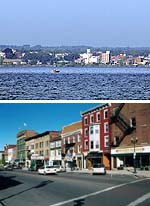
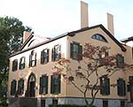

Sight Seeing
The Finger Lakes region of New York State offers many attractions for those who would like to take a mini-vacation.
|
 |
Taughannock Falls
Taughannock Falls is the highest waterfall in the Northeast and is located about 35 miles south of Geneva. The falls empty into a rock bed creek which flows into Cayuga Lake, the largest of New York's Finger Lakes. Near the falls is a lakeside park as well as several hiking trails. The hike from the lake to the base of the falls is about 3/4 mi and is particularly enjoyable if you like geology.
website driving directions
|
 |
Wineries
The Finger Lakes region is famous for its wineries on Cayuga, Seneca, and Keuka Lakes. In fact, the Finger Lakes region is the home of the country's first bonded winery, the Pleasant Valley Winery in Hammondsport, NY. The wineries offer tastings of their wines in a friendly environment, and some offer tours of their vineyards and barrel houses. Dan and Amanda particularily recommend trying the Reislings, as that is the grape that put the Finger Lakes region on the map. In addition to the Reislings, you can find a host of other great wines; both serious and fun-loving. Just don't blame us for your credit card bill if you come home with a car full of wine!
All Fingerlakes wineries
Seneca Lake
Cayuga Lake
Keuka Lake
|
 |
Cornell
Cornell University is where Dan and Amanda met (and where they have spent the last 10-12 years of their lives). The campus is about an hour drive south of Geneva and offers a variety of enjoyable activities. You can join a walking tour, vist the Johnson Art Museum, climb the clock tower, or stroll the 3500 acres of the Plantations. Or grab an ice cream cone at the Cornell Dairy Bar and walk down to the Biotechnology Building to see where Amanda works.
Visiting the Campus
Johnson Art Museum
Cornell Plantations
Clock Tower
Dairy Store
|
|  |
Geneva
For those who would rather stay in Geneva, there are a number attractions. You can go swimming or picnic at Seneca Lake State Park off Rte 5&20, discover Geneva's historical sites, grab a burger and beer at Parker's Grille and Tap House on Seneca Street (Dan and Amanda's favorite pub), or see a movie at the unique Cinema Theatre on Exchange Street.
Historical Geneva
|

 |
Historical Places and Museums
The birth of the Women's Rights Movement took place 10 miles east of Geneva in Seneca Falls New York. There you can visit the National Women's Hall of Fame, the Elizabeth Cady Stanton House and the Women's Rights Historical Park.
About 40 miles south of Geneva in Auburn is the William H. Seward House. William Seward served as Secretary of State for both Presidents Lincoln and Johnson and was a major player in the Alaskan Purchase. Also in Auburn is the Harriet Tubman Home. Harriet Tubman played a critical role in freeing millions of slaves through the Underground Railroad during the first half of the nineteenth century.
For those who are geological buffs, there's always the Paleontological Research Institution in Ithaca, New York (about 45 miles south of Geneva). This fascinating hands-on museum houses an extensive collection of fossils, including bones from the two mastadons which have been unearthed in Western New York. Also in Ithaca is the Science Center, which offers hands-on exhibits geared toward making science fun for young audiences.
Finally, if you travel north of Geneva 20 miles to Palmyra, New York, you can visit the Hill Cumorah, the birthplace of the Morman religion. According to the Morman faith, it was here that the angel Moroni gave Joseph Smith the tablets which Smith then translated into the Book of Mormon.
National Women's Hall of Fame
William Seward House
Harriet Tubman Home
Science Center
Paleontological Research Institute
Hill Cumorah
|
 |
Scenic Ideas
Take a boat ride on one of the Finger Lakes.
Canandaigua Lake: Canandaigua Lady, Captain Gray's
Keuka Lake: Keyuka Maid
Cayuga Lake: MV Manhattan
Seneca Lake (from Southern end): Captain Bill's
Or visit one of the many New York State Parks in the Finger Lakes Region. Here are just a few:
Ithaca: Buttermilk Falls Park, Robert Treman Park (45 miles South)
Watkins Glen: State Park and Raceway (35 miles South)
Castile: Letchworth Park "the Grand Canyon of the East" (75 miles West)
|